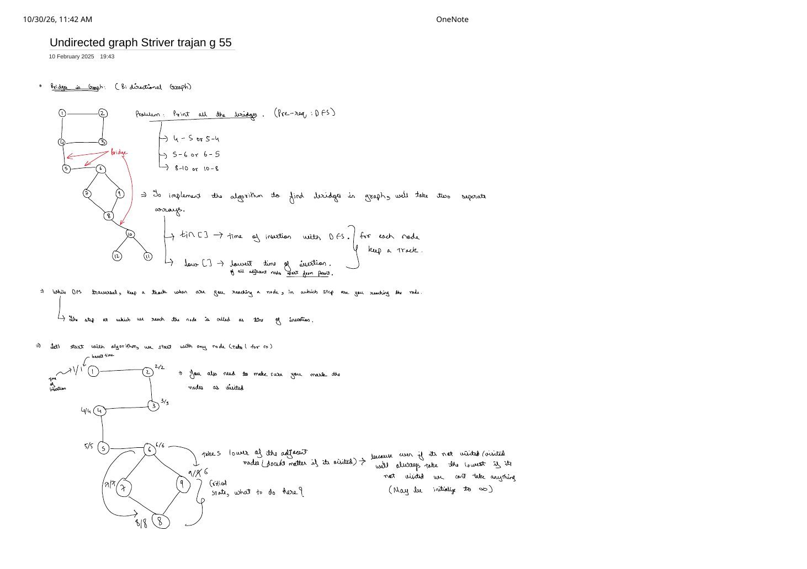
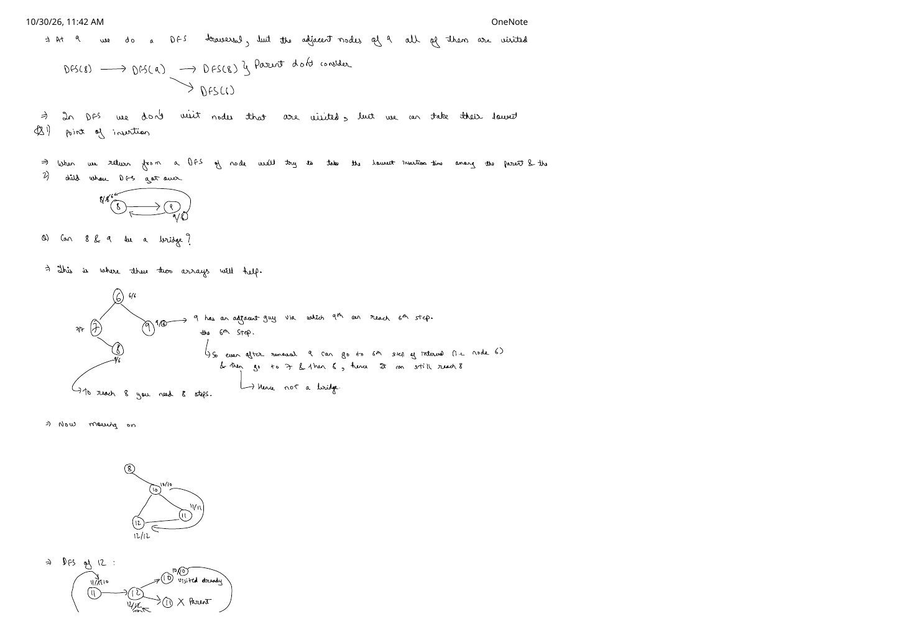
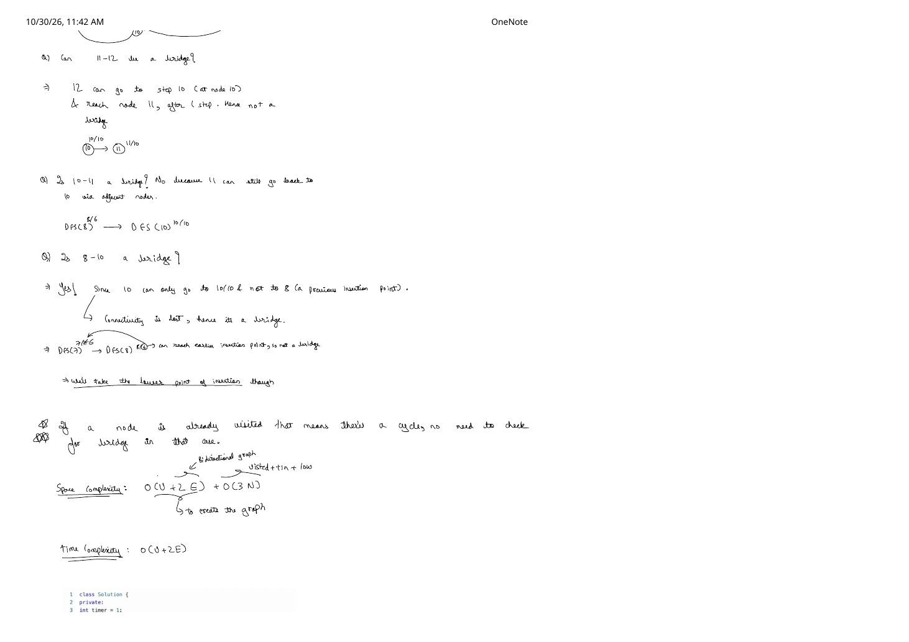
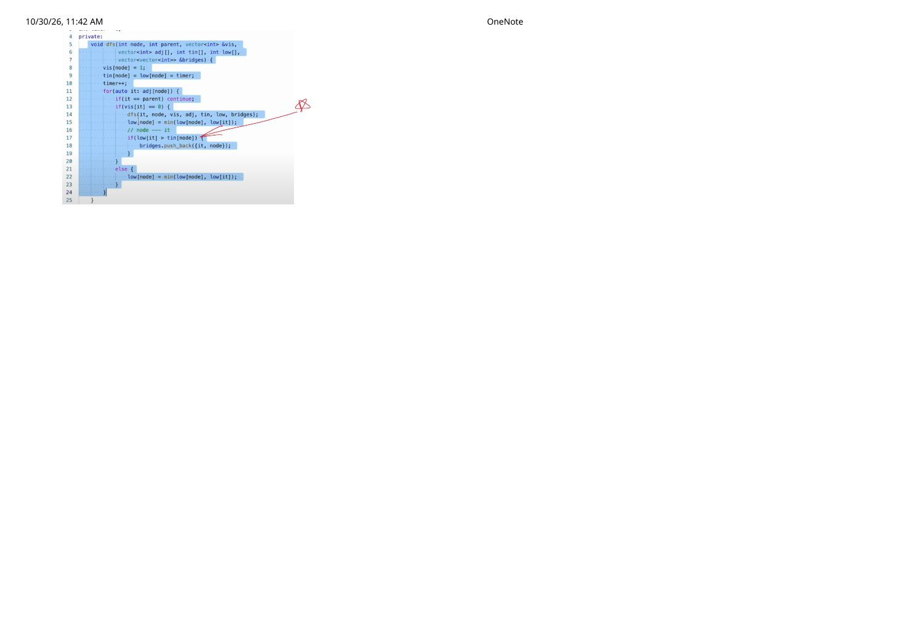
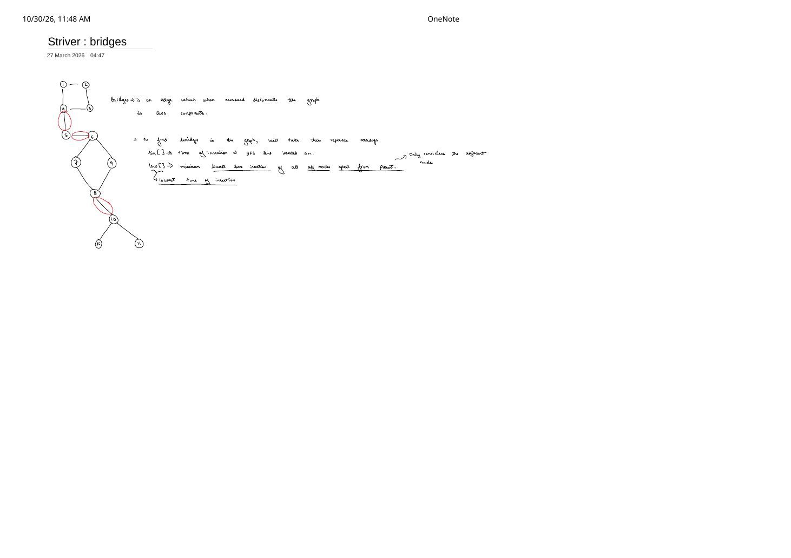
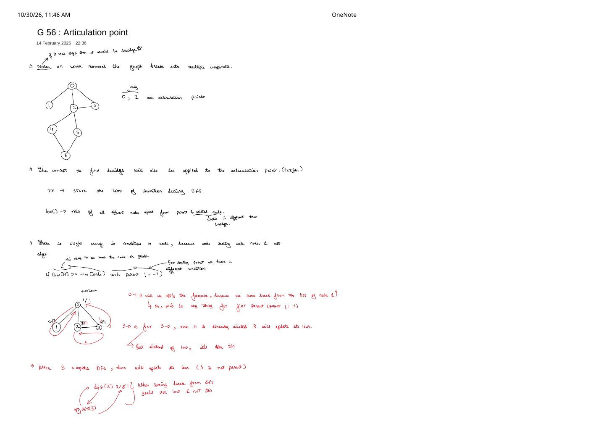
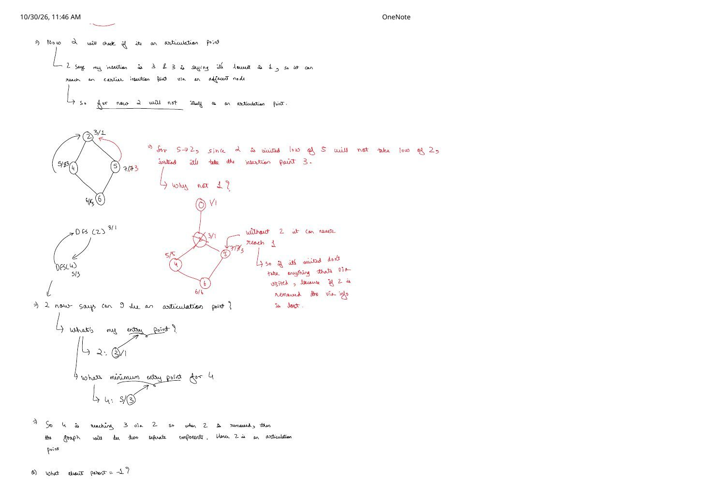
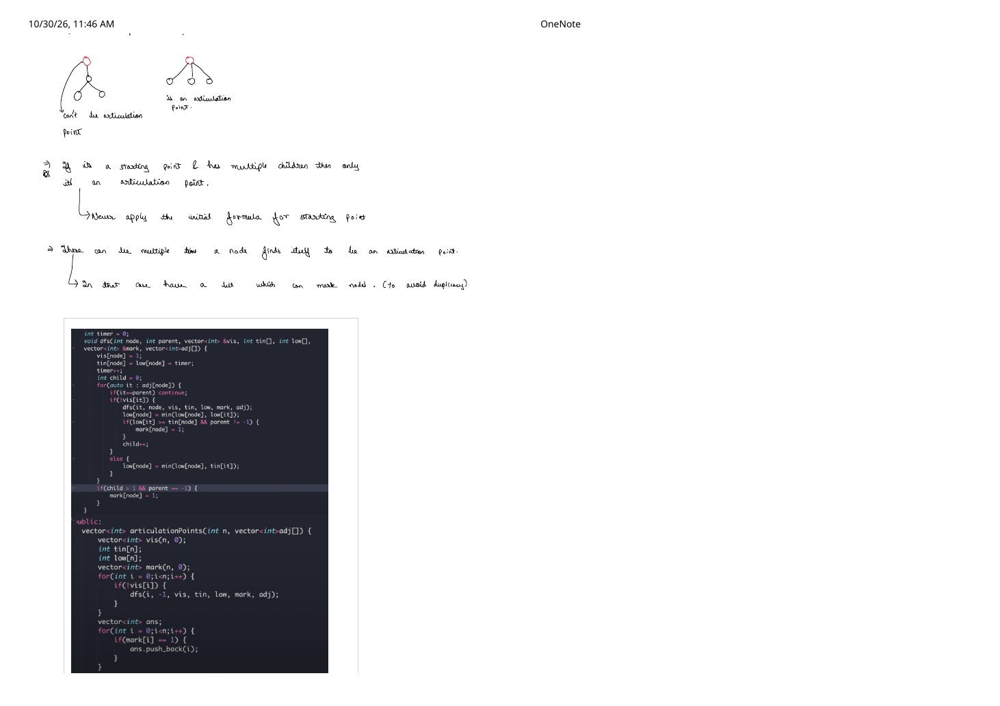

Tarjan's Undirected Cut Algorithms: Bridges (G-55) & Articulation Points (G-56)
Expanded from handwritten competitive coding study notes (01_Undirected_graph_Striver_trajan_g_55.pdf, 04_Striver_bridges.pdf, & 03_G_56_Articulation_point.pdf)
Checking whether removing an edge or vertex disconnects an undirected graph by deleting each candidate and running a fresh DFS costs $\mathcal{O}(E(V + E))$ or $\mathcal{O}(V(V + E))$ — far too slow when $V, E = 10^5$. Robert Tarjan's DFS timestamp technique finds every bridge (LeetCode 1192: Critical Connections in a Network) and every articulation point in a single $\mathcal{O}(V + 2E)$ DFS pass using just two integer arrays: tin[] and low[].
Yet Bridges and Articulation Points hide one of the sharpest traps in graph algorithms: a 3-character change (low[it] vs. tin[it] on a visited back-edge) passes Bridges effortlessly while silently breaking Articulation Points! Let us derive both algorithms side by side directly from the handwritten traces.
1. The Two Timestamps: tin[] and low[]
Discovery Time (tin[]) vs. Low-Link Value (low[])
tin[node](Time of Insertion): The step counter at which DFS first entersnode. Once stamped,tin[node]never changes. Ancestors in the DFS tree always have strictly smallertinthan their descendants.low[node](Lowest Reachable Insertion Time): The minimumtinof any vertex reachable fromnode's DFS subtree using zero or more tree edges downward followed by at most one back-edge to an already-visited ancestor (explicitly ignoring the direct tree edge back toparent).
Why must we always skip if (it == parent) continue;? Because every undirected edge parent — node appears in both adj[parent] and adj[node]. If node looked right back up the exact tree edge it just came down, low[node] would trivially absorb tin[parent] even on a tree with zero cycles!
2. Part I: Bridges in an Undirected Graph (Striver G-55)
A bridge (or cut-edge) is an undirected edge whose removal increases the number of connected components in the graph.
Full 12-Vertex Dry Run (01_Undirected_graph_Striver_trajan_g_55.pdf & 04_Striver_bridges.pdf)
Consider the 12-vertex graph from pages 1–3 of the bridge notes, composed of three cycles (1–2–3–4–1, 6–7–8–9–6, and 10–11–12–10) joined by three bottleneck edges:
tin/low trace on the 12-vertex Striver G-55 graph. Only 4–5 ($5 \gt 4$), 5–6 ($6 \gt 5$), and 8–10 ($10 \gt 8$) satisfy $\text{low}[\text{it}] \gt \text{tin}[\text{node}]$.Let us trace the four critical questions asked in the handwritten notes as DFS unwinds:
- At node
9(tin = 9, arrived from8): Neighbor8isparent(ignored), while neighbor6is already visited withtin[6] = 6. Thuslow[9] = min(9, 6) = 6. Returning to8(tin[8] = 8), we updatelow[8] = min(8, low[9]) = 6and ask: is8–9a bridge?
Since $\text{low}[9] = 6 \le \text{tin}[8] = 8$, no! Even if8–9is cut,9reaches step6(node6) and walks $6 \to 7 \to 8$. - Inside triangle
10 → 11 → 12: At12(12/12), visited back-edge12 → 10setslow[12] = 10, which pullslow[11] = 10. Returning to10(tin[10] = 10): is10–11a bridge?
Test $\text{low}[11] \gt \text{tin}[10] \implies 10 \gt 10$, which is false! Because only the edge10–11is removed while vertex10stays alive,11reaching10via $11 \to 12 \to 10$ keeps everything connected. - Returning from
10(10/10) to8(8/6): Test $\text{low}[10] \gt \text{tin}[8] \implies 10 \gt 8$ — TRUE! The entire `{10, 11, 12}` triangle has no back-edge reaching `8` or earlier, so8–10is a bridge. - Unwinding through
6 → 5 → 4: At5(5/5), $\text{low}[6] = 6 \gt \text{tin}[5] = 5$ (bridge5–6). At4, $\text{low}[5] = 5 \gt \text{tin}[4] = 4$ (bridge4–5), whereas back-edge4 → 1dropslow[4] = low[3] = low[2] = 1, protecting all four edges of the1–2–3–4square!
Tarjan's Bridge Condition
A DFS tree edge $(\text{node}, \text{it})$ (where it was unvisited when explored from node) is a bridge if and only if:
Why we never test already-visited back-edges: An edge to an already-visited non-parent neighbor closes a cycle with the DFS tree path; no edge belonging to a cycle can ever disconnect the graph!
C++ Implementation for Bridges (Striver G-55 / LeetCode 1192)
#include <bits/stdc++.h>
using namespace std;
class Solution {
private:
int timer = 1;
void dfs(int node, int parent, vector<int>& vis,
const vector<vector<int>>& adj,
vector<int>& tin, vector<int>& low,
vector<vector<int>>& bridges) {
vis[node] = 1;
tin[node] = low[node] = timer++;
for (int it : adj[node]) {
if (it == parent) continue;
if (!vis[it]) {
dfs(it, node, vis, adj, tin, low, bridges);
low[node] = min(low[node], low[it]);
// Strict inequality: child subtree cannot even reach 'node' via another path
if (low[it] > tin[node]) {
bridges.push_back({node, it});
}
} else {
// Back-edge to an already-visited ancestor
low[node] = min(low[node], tin[it]);
}
}
}
public:
vector<vector<int>> criticalConnections(int n, vector<vector<int>>& connections) {
vector<vector<int>> adj(n);
for (const auto& e : connections) {
adj[e[0]].push_back(e[1]);
adj[e[1]].push_back(e[0]);
}
vector<int> vis(n, 0), tin(n, 0), low(n, 0);
vector<vector<int>> bridges;
for (int i = 0; i < n; i++) {
if (!vis[i]) {
dfs(i, -1, vis, adj, tin, low, bridges);
}
}
return bridges;
}
};3. Part II: Articulation Points (Striver G-56)
An articulation point (or cut-vertex) is a vertex whose removal — together with all edges incident to it — splits its connected component into two or more components.
Switching from cutting an edge to deleting an entire vertex forces three surgical changes to Tarjan's DFS, all derived step by step in 03_G_56_Articulation_point.pdf:
Change 1: Strict > Becomes >= (low[it] >= tin[node])
When we cut an edge $(\text{node}, \text{it})$, reaching node itself ($\text{low}[\text{it}] = \text{tin}[\text{node}]$) kept it connected. When we delete vertex node itself, reaching node is useless because node is gone! To stay connected to the rest of the graph above node, it's subtree must reach strictly before node ($\text{low}[\text{it}] \lt \text{tin}[\text{node}]$). Hence for any non-root vertex ($\text{parent} \neq -1$), node is an articulation point whenever some DFS child it satisfies:
Change 2 (The Red-Ink Proof): Why Visited Back-Edges MUST Take tin[it] and NEVER low[it]!
Look closely at line 22 of the Bridges screenshot on page 4 of 01_Undirected_graph...: Striver wrote low[node] = min(low[node], low[it]) on a visited back-edge, and for Bridges it happened to pass. Why does low[it] catastrophically fail for Articulation Points? Page 2 of 03_G_56_Articulation_point.pdf proves this on a 7-vertex graph (0..6) where only 0 and 2 are articulation points:
03_G_56_Articulation_point.pdf: if vertex 2 is deleted, the lower diamond {4,5,6} loses its bridge through 2 to 0, so 5 can only credit tin[2] = 3, never low[2] = 1!Follow the exact sequence of events in the figure above:
- DFS starts at
0(1/1): visits leaf1(2/2, DFS child #1 of0), then visits2(3/3, DFS child #2 of0) $\to$3(4/4). - At
3, back-edge3 → 0sees visited0and setslow[3] = tin[0] = 1. Returning to2setslow[2] = min(3, low[3]) = 1. Checklow[3] >= tin[2]($1 \ge 3$): False, so3does not make2an articulation point. - Next, from
2(which ALREADY holdslow[2] = 1!), DFS explores the lower diamond:2 → 4 (5/5) → 6 (6/6) → 5 (7/7). - At
5, neighbor2is already visited:- If
5tooklow[2] = 1, it would claim5can reach0in 1 back-edge — forgetting that reaching0goes through vertex2($5 \to 2 \to 3 \to 0$)! When2is deleted, that entire path vanishes! - Instead, taking
tin[2] = 3setslow[5] = 3$\implies$low[6] = 3$\implies$low[4] = 3.
- If
- Back at
2, testing child4gives $\text{low}[4] = 3 \ge \text{tin}[2] = 3$ (and $\text{parent} \neq -1$) $\implies$2is flagged as an articulation point!
Change 3: The DFS Root Exception (parent == -1 && child > 1) & mark[]
Why did we exclude parent == -1 from low[it] >= tin[node]? Because the starting root has the smallest tin in its component, so low[it] >= tin[root] is always true — even if the root is a degree-1 leaf!
Instead, as drawn at the top of page 3 of 03_G_56_Articulation_point.pdf, the DFS root is an articulation point if and only if it initiates $\text{child} \gt 1$ unvisited DFS tree calls:
- Why unvisited DFS calls (not graph degree)? In a triangle
0–2–3–0, vertex0has degree $2$, yetDFS(0) → DFS(2) → DFS(3)visits3before returning to0! When the loop at0later checks3,vis[3]is already1, sochild == 1and0is rightly not an articulation point. - In our 7-node graph, however,
DFS(1)finishes without ever reaching2, so0launches a second unvisited callDFS(2)($\text{child} = 2 \gt 1$) $\implies$0is an articulation point! - Finally, because a single hub vertex can separate 3 or 4 biconnected subtrees, we record
mark[node] = 1in a boolean array rather than pushing directly to a vector so every articulation point is output once in sorted order.
Complete C++ & Python Implementation (Striver G-56)
#include <bits/stdc++.h>
using namespace std;
class Solution {
private:
int timer = 0;
void dfs(int node, int parent, vector<int>& vis,
int tin[], int low[], vector<int>& mark,
vector<int> adj[]) {
vis[node] = 1;
tin[node] = low[node] = timer++;
int child = 0; // counts independent unvisited DFS tree children
for (auto it : adj[node]) {
if (it == parent) continue;
if (!vis[it]) {
dfs(it, node, vis, tin, low, mark, adj);
low[node] = min(low[node], low[it]);
// Non-root cut-vertex condition
if (low[it] >= tin[node] && parent != -1) {
mark[node] = 1;
}
child++;
} else {
// CRITICAL: MUST use tin[it], NEVER low[it]!
low[node] = min(low[node], tin[it]);
}
}
// Root cut-vertex condition
if (child > 1 && parent == -1) {
mark[node] = 1;
}
}
public:
vector<int> articulationPoints(int n, vector<int> adj[]) {
vector<int> vis(n, 0), mark(n, 0);
int tin[n], low[n];
for (int i = 0; i < n; i++) {
if (!vis[i]) {
dfs(i, -1, vis, tin, low, mark, adj);
}
}
vector<int> ans;
for (int i = 0; i < n; i++) {
if (mark[i] == 1) ans.push_back(i);
}
if (ans.empty()) return {-1};
return ans;
}
};import sys
sys.setrecursionlimit(200_000)
def articulation_points(n: int, adj: list[list[int]]) -> list[int]:
vis = [False] * n
tin = [0] * n
low = [0] * n
mark = [False] * n
timer = 0
def dfs(u: int, parent: int) -> None:
nonlocal timer
vis[u] = True
tin[u] = low[u] = timer
timer += 1
children = 0
for v in adj[u]:
if v == parent:
continue
if not vis[v]:
dfs(v, u)
low[u] = min(low[u], low[v])
if low[v] >= tin[u] and parent != -1:
mark[u] = True
children += 1
else:
low[u] = min(low[u], tin[v]) # MUST be tin[v]
if parent == -1 and children > 1:
mark[u] = True
for i in range(n):
if not vis[i]:
dfs(i, -1)
ans = [i for i, is_ap in enumerate(mark) if is_ap]
return ans if ans else [-1]4. Complexity & Side-by-Side Diff
- Time Complexity (Both): $\mathcal{O}(V + 2E)$ — standard single-pass DFS over $V$ vertices and $2E$ undirected adjacency entries (plus $\mathcal{O}(V)$ scan of
mark[]). - Auxiliary Space: $\mathcal{O}(3V)$ to $\mathcal{O}(4V)$ for
vis[],tin[],low[], (andmark[]), plus $\mathcal{O}(V)$ recursion stack (and $\mathcal{O}(V + 2E)$ if building the adjacency list from an edge list).
min(low[node], tin[it]) on Back-Edges!
Using tin[it] on the else branch (when vis[it] == 1) is 100% mathematically exact for BOTH Bridges and Articulation Points, because by definition a low-link path is allowed to traverse at most one back-edge from the DFS subtree! Memorizing tin[it] in both templates eliminates the #1 bug in competitive graph problems.
From the Handwritten Notes
Expand the original handwritten pages below to inspect the exact derivations, dry runs, and annotations across all 9 sheets:
View original note — Tarjan Bridges (G-55) Page 1: 12-vertex setup, tin[]/low[] & trace to node 9


01_Undirected_graph_Striver_trajan_g_55.pdf: Defining tin[] and low[] on the 12-vertex graph and reaching critical state 9/6.View original note — Tarjan Bridges (G-55) Page 2: Why 8–9 is not a bridge & entering 10–11–12


01_Undirected_graph_Striver_trajan_g_55.pdf: Ignoring parent 8 at 9, testing 8–9, and tracing triangle 10–11–12.View original note — Tarjan Bridges (G-55) Page 3: Confirming bridge 8–10 & $\mathcal{O}(V + 2E)$ complexity


01_Undirected_graph_Striver_trajan_g-55.pdf: Contrasting non-bridges 11–12, 10–11 with bridge 8–10, plus space/time derivation.View original note — Tarjan Bridges (G-55) Page 4: C++ dfs code highlighting low[it] > tin[node]


01_Undirected_graph_Striver_trajan_g_55.pdf: Annotated C++ DFS bridge check.View original note — Striver Bridges Summary Sheet: Red-circled bridges 4–5, 5–6, 8–10


04_Striver_bridges.pdf: Concise visual recap of the three cut-edges and tin[]/low[] roles.View original note — Articulation Point (G-56) Page 1: 7-vertex graph, >= shift & upper-triangle trace


03_G_56_Articulation_point.pdf: Identifying cut-vertices 0, 2, condition low[it] >= tin[node] && parent != -1, and tracing 0–1–2–3.View original note — Articulation Point (G-56) Page 2: Red-ink proof why 5 → 2 takes tin[2] = 3 not low[2] = 1


03_G_56_Articulation_point.pdf: Essential proof showing why borrowing low[it] across a visited vertex fails when that vertex is removed.View original note — Articulation Point (G-56) Page 3: Root child > 1 rule, mark[] deduplication & C++ code


03_G_56_Articulation_point.pdf: Comparing 1-child vs multi-child DFS roots, avoiding duplicate insertions with mark[], and full C++ code.